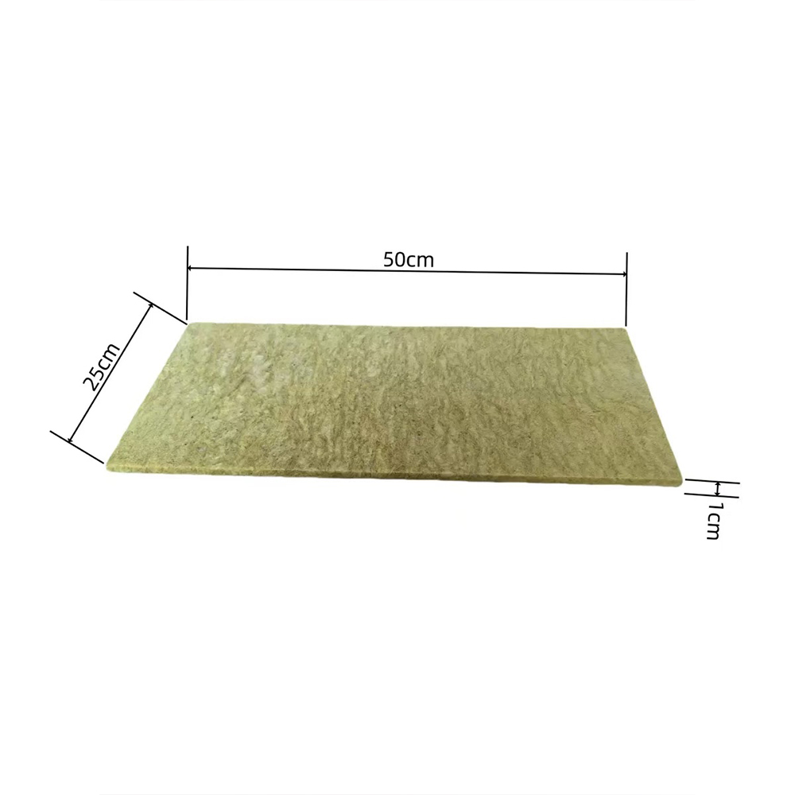

01. 业务详情
从基质结构到田间表现，理解岩棉为什么适合机插秧育秧。
控水稳温多孔纤维结构持水透气，低温环境下秧苗生长更稳定。
标准可依参与育秧基质标准体系建设，指标可对照、可复现。
批次可查按批次号对照指标与证书，形成可追溯的技术档案。

02. 数据看板
以下数据来自合作科研机构试验与工程示意，仅供技术沟通参考。
+26.38%
地上部干重
+97.42%
SOD 活性
+8.2%
较专用基质增产
03. 标准路径
从企业标准到行业标准的推进路径（路径示意）。
企业标准企业内控指标与检测方法（示意）
团体标准团标立项与指标验证（示意，当前推进中）
行业标准参与行业标准修订（示意）
国家标准持续推进（示意）
路径为示意，不代表已获批准的标准编号。
04. 科技成果证书
省级科技成果登记号 20250949 · 国家级科技成果登记号 3392025Y1039。
部分指标为工程示意值，非第三方检测认证数据，仅供技术沟通参考；最终以正式标准与检测报告为准。
05. 合作机构
技术背书与合作研究机构。
中国农科院Chinese Academy of Agricultural Sciences
中国水稻研究所China National Rice Research Institute
06. 批次验真
输入批次号查询指标与证书。当前为演示数据，正式验真以权威检测报告为准。
需要完整技术方案与报价？
提供育秧规模、机型与所在地区，我们会给出针对性建议。